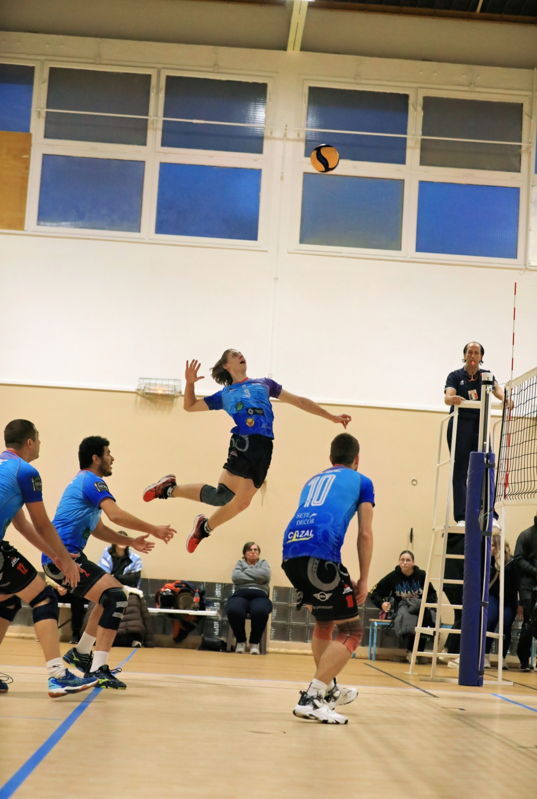

Centres d'intérêt
Une passion qui forge la rigueur, l'esprit d'équipe et le dépassement de soi.
Je pratique le volleyball en compétition au SVBC (Sète Volley-Ball Club) à un niveau prénationale. Cette discipline exigeante m'a appris à travailler en équipe, à gérer la pression des matchs et à toujours chercher à progresser.
Le volleyball est bien plus qu'un sport pour moi : c'est une école de vie. Les entraînements réguliers, les déplacements et les compétitions m'ont forgé une discipline et une capacité d'adaptation que je retrouve dans mes projets techniques.
Réceptionneur-attaquant de formation, j'ai développé une lecture rapide du jeu et une capacité à prendre des décisions sous pression — des qualités directement transférables dans mon travail d'ingénieur.
La pratique sportive à haut niveau nourrit directement mon approche technique. La rigueur des entraînements, l'analyse des performances et l'amélioration continue sont des méthodes que j'applique aussi bien sur le terrain que dans mes projets embarqués.
Gérer un projet en équipe, respecter des délais, communiquer clairement sous pression : autant de compétences développées sur le terrain de volleyball et réinvesties dans mes expériences professionnelles.
"Le sport de haut niveau m'a appris que la progression vient de la répétition, de l'analyse et de la persévérance — exactement comme en ingénierie."— Roman Orliange